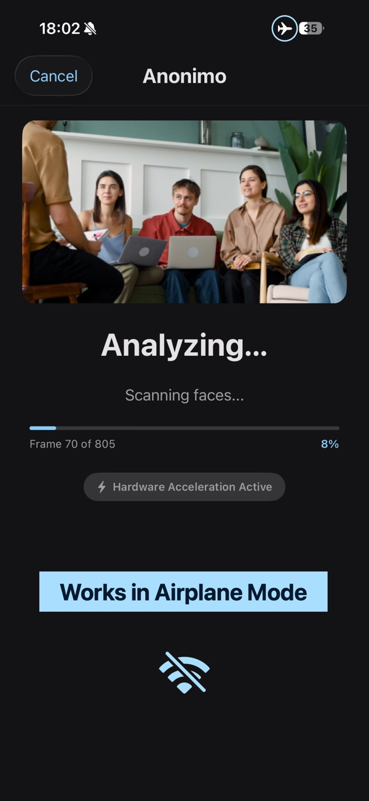
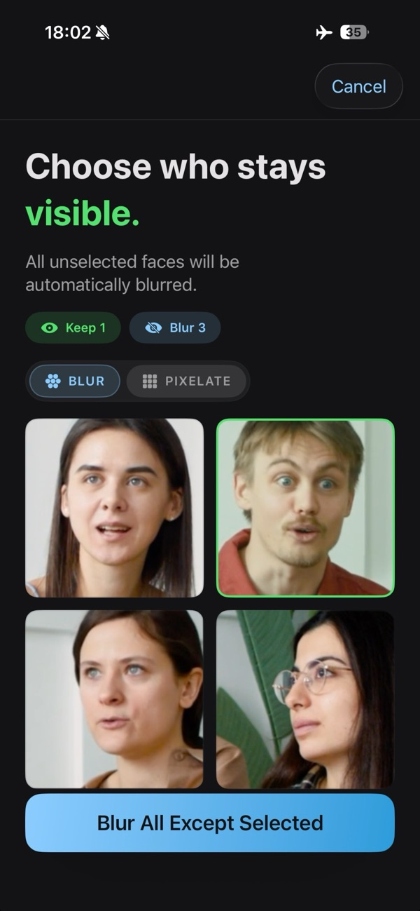
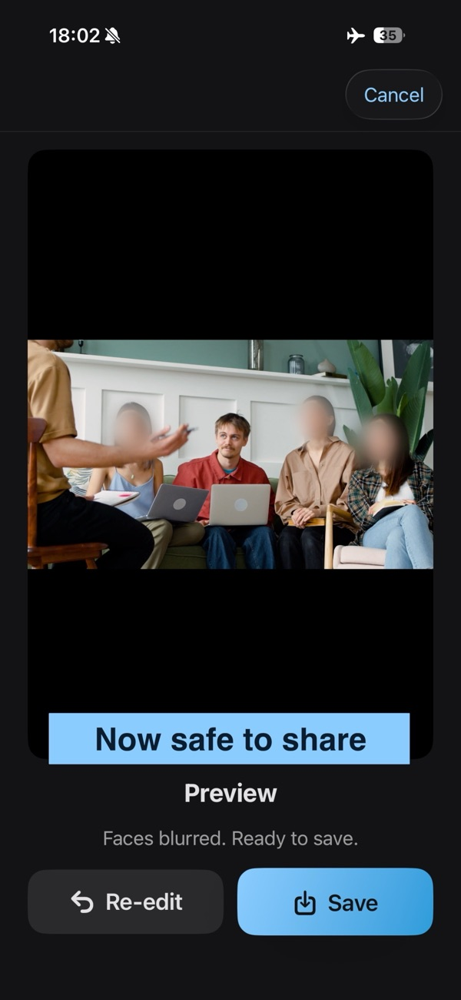

Anonimo Face Blur
Blur everyone in your video except the people you pick.
Pixelation, blur or emoji covers. Fully offline, on your iPhone.



How it works
- Pick a video or photo from your library.
- Anonimo finds every face and groups them by person — across the whole video, not frame by frame.
- Tap the people who stay visible. Everyone else is hidden in every frame.
- Export to Photos at source resolution.
Three ways to hide a face
Pixelation
Crisp mosaic for full anonymity. Free.
Gaussian blur
Soft blur with feathered edges for a natural look. Pro.
Emoji covers
An emoji that follows each face through the video. The smiley is free, the full set is Pro.
Private by design
Works in Airplane Mode
Detection, blurring and export all run on your iPhone. Your videos never leave the device.
Data Not Collected
That's the App Store privacy label. No analytics, no tracking, no ads, no servers.
No account
Open the app and start. There is nothing to sign up for.
Free and Pro
| Free | Pro | |
|---|---|---|
| Face detection and grouping | Unlimited | Unlimited |
| Video length | Up to 30 seconds | Unlimited |
| Export resolution | 720p | Source, up to 4K |
| Hide styles | Pixelation, smiley emoji | Pixelation, Gaussian blur, all emoji |
| Watermark | Small, in the corner | None |
| Price | Free | Lifetime $14.99 / €17.99 Yearly $9.99 / €9.99, 7-day free trial |
Prices vary by region and are set by the App Store.
FAQ
Does Anonimo work offline?
Yes, even in Airplane Mode. All face detection and processing runs on your iPhone. The internet is only needed to buy Anonimo Pro.
Can I blur everyone except myself?
Yes. Anonimo groups faces by person, so you tap the people who stay visible once and everyone else is hidden in every frame of the video.
Can I cover faces with emoji in a video?
Yes. The emoji follows each face as it moves. The smiley is free; Pro unlocks the full set.
Does Anonimo upload my videos?
Never. The app has no networking code for media, no account and no analytics. The App Store privacy label is Data Not Collected. See the Privacy Policy.
Is Anonimo free?
Yes, with limits: video exports up to 30 seconds at 720p, pixelation and the smiley emoji, and a small watermark. Pro removes the limits.
Lifetime or Yearly — which is better?
Both unlock the same Pro features. Lifetime is a one-time purchase and cheaper long-term. Yearly is cheaper to start and includes a 7-day free trial.
Which videos and photos are supported?
Any standard iPhone video (H.264, HEVC) up to 4K, and photos in JPEG, PNG and HEIC. Anonimo runs on iPhone with iOS 17 or later.
Will it find every face?
Frontal and angled faces, yes. Very small, heavily covered or extreme-profile faces can be missed, and a face that is never detected stays visible — review your export before publishing.
How do I restore a purchase on a new iPhone?
Open the paywall in Anonimo and tap "Restore purchases" while signed in with the Apple ID that made the purchase.
How do I cancel a subscription?
Open iOS Settings → your Apple ID → Subscriptions → Anonimo. Cancel at least 24 hours before the period ends to avoid the next renewal.